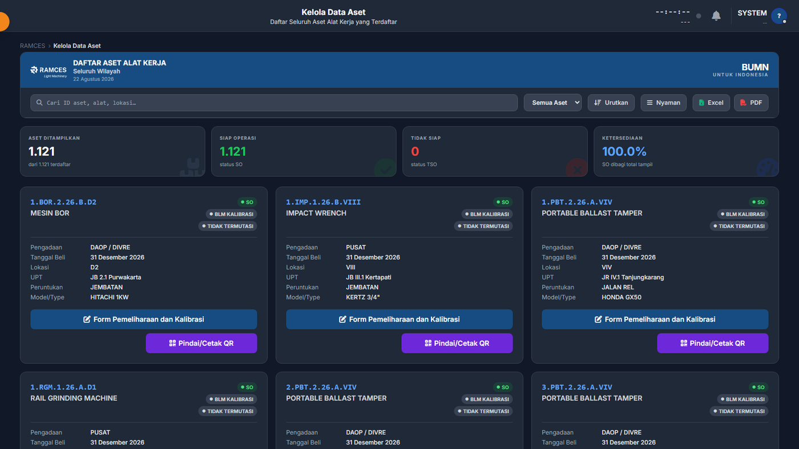
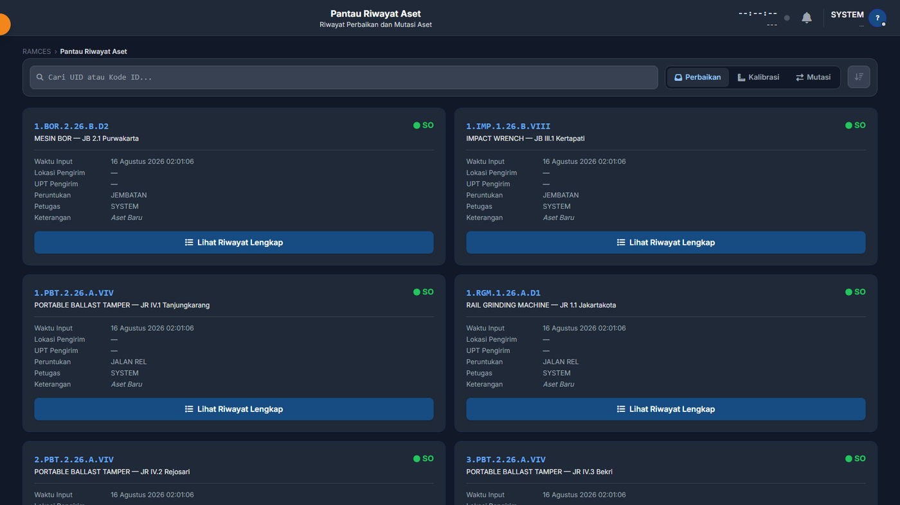

Current focus
RAMCES
Asset management and warehouse control for PT KAI's Track & Bridge Division
A full-stack platform tracking light work equipment across the national rail network: gensets, drills, rail grinding machines, track geometry trolleys. It covers registration, field condition reporting, calibration, inter-region transfer, spare-part consumption, and write-off, with role-scoped access so a regional admin sees their region and head office sees everything.
I built the WebSocket live-update layer, JWT authentication across five region-scoped roles, rate limiting, and the response-compression middleware that cuts a 470 KB payload by roughly 8:1. I also refactored the backend from a single 5,900-line file into eleven domain modules holding a strict no-cyclic-imports rule.
- 92API endpoints
- 16database tables
- 39klines of code
- 2developers
Running instance
Captured from the application running locally against a seeded database of 1,121 assets across 58 locations.

